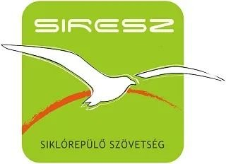
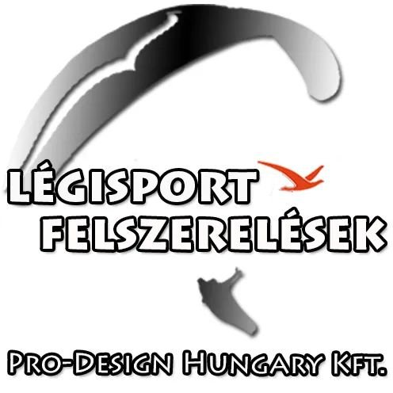
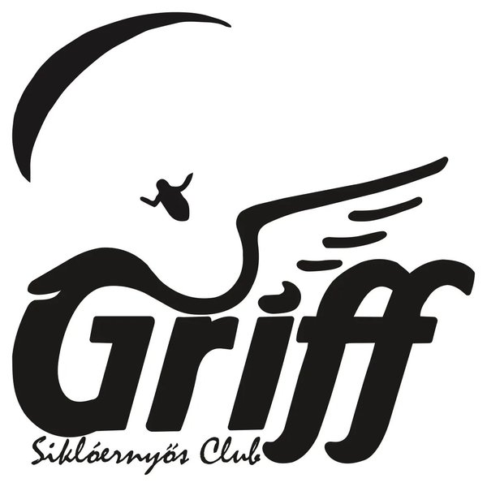
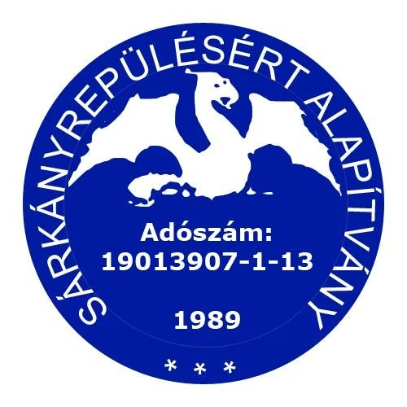
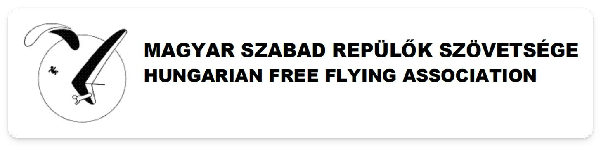
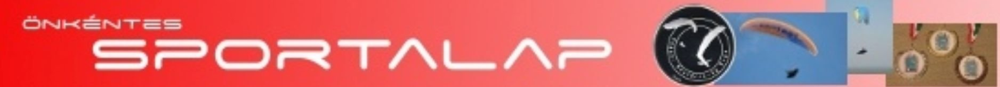
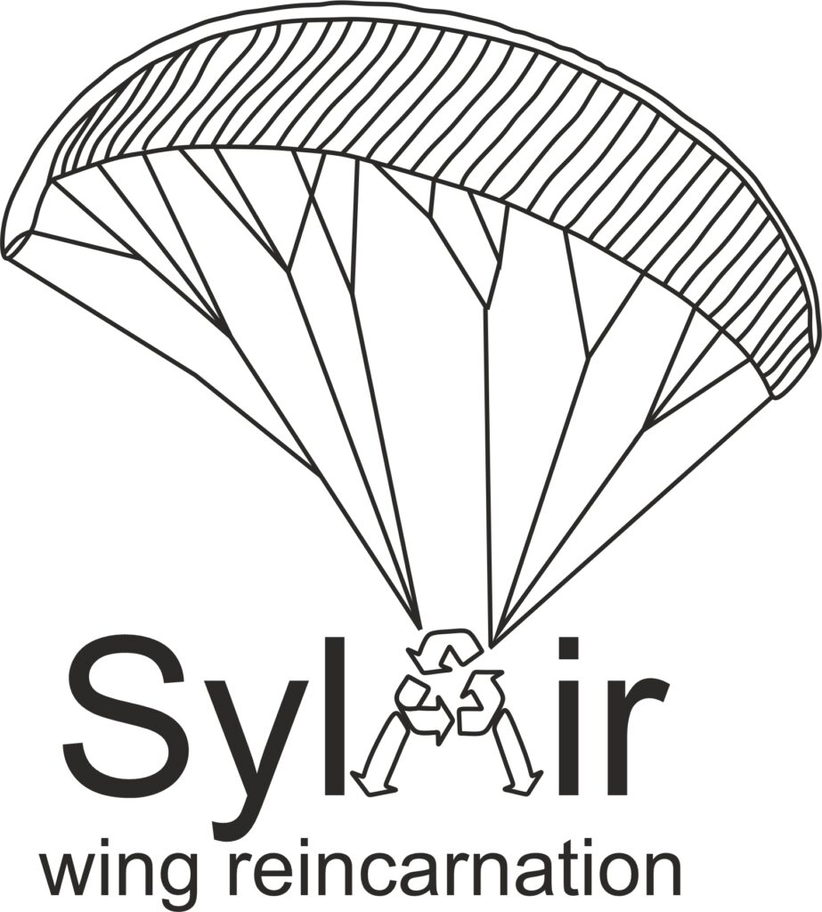
XContest: 1 635,76 EUR = 599 eFt
Decathlon-utalványok: 160 eFt
Serlegek, érmek: 120 eFt
Kiadások: 879 eFt
Önkéntes támogatás: 572 eFt
SIRESZ: 272 eFt
HFFA: 300 eFt
SIRESZ Sportalap: 307 eFt
Bevételek: 879 eFt
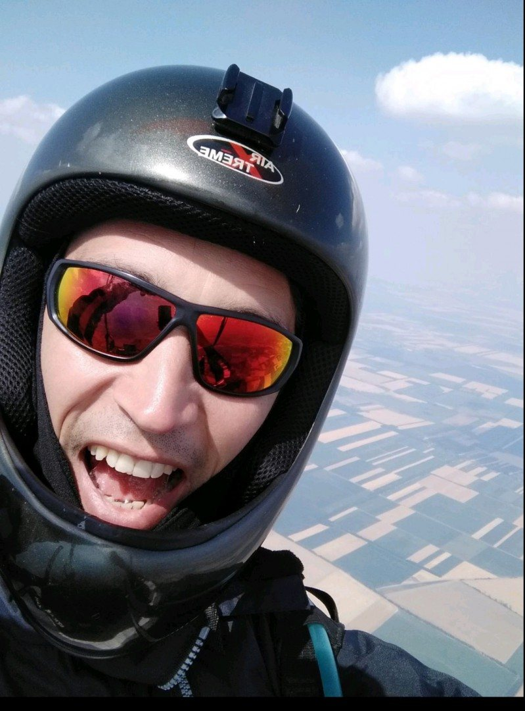
| # | Dátum | Starthely | Típus | Táv | Pont |
|---|---|---|---|---|---|
| 1 | 2026.07.31. | Sárhegy | FAI háromszög | 118.58 km | 237.17 p. |
| 2 | 2026.07.10. | Csobánc | Szabadtáv | 219.33 km | 219.33 p. |
| 3 | 2026.07.29. | Szársomlyó | Szabadtáv | 139.73 km | 139.73 p. |
| 4 | 2026.08.21. | Orosháza | Szabadtáv | 138.09 km | 138.09 p. |
| # | Dátum | Starthely | Típus | Táv | Pont |
|---|---|---|---|---|---|
| 1 | 2026.06.07. | Nyikom | Szabadtáv | 221.44 km | 221.44 p. |
| 2 | 2026.05.31. | Nyikom | Szabadtáv | 212.38 km | 212.38 p. |
| 3 | 2026.04.04. | Eged | Szabadtáv | 183.03 km | 183.03 p. |
| 4 | 2026.05.09. | Hajdúszoboszló | Szabadtáv | 141.13 km | 141.13 p. |
| # | Dátum | Starthely | Típus | Táv | Pont |
|---|---|---|---|---|---|
| 1 | 2026.08.05. | Nyikom | FAI háromszög | 103.75 km | 207.49 p. |
| 2 | 2026.06.27. | Nyikom | FAI háromszög | 93.43 km | 186.85 p. |
| 3 | 2026.07.14. | Nyikom | FAI háromszög | 92.45 km | 184.90 p. |
| 4 | 2026.07.31. | Nyikom | FAI háromszög | 90.81 km | 181.61 p. |
| 4 | Csaba Kátai [CsAbU]Siresz | 553.72 | |
| 5 | Tamás Bujdosó [Rebellion]NagyLufi SE | 551.72 | |
| 6 | Peter Zsolnai [ianlosz]Felhőút SE | 531.06 | |
| 7 | Gyula Horák [horakgyuszibacsi]Blue Sky SE | 506.14 | |
| 8 | Tamas Mezo [mezot]Szat-Air | 475.19 | |
| 9 | István Gyarmati-Szabó [Pisti]Free Air SE. | 456.61 | |
| 10 | Sándor Fülöp [Smelakz37]Hajdúszoboszló | 451.56 |
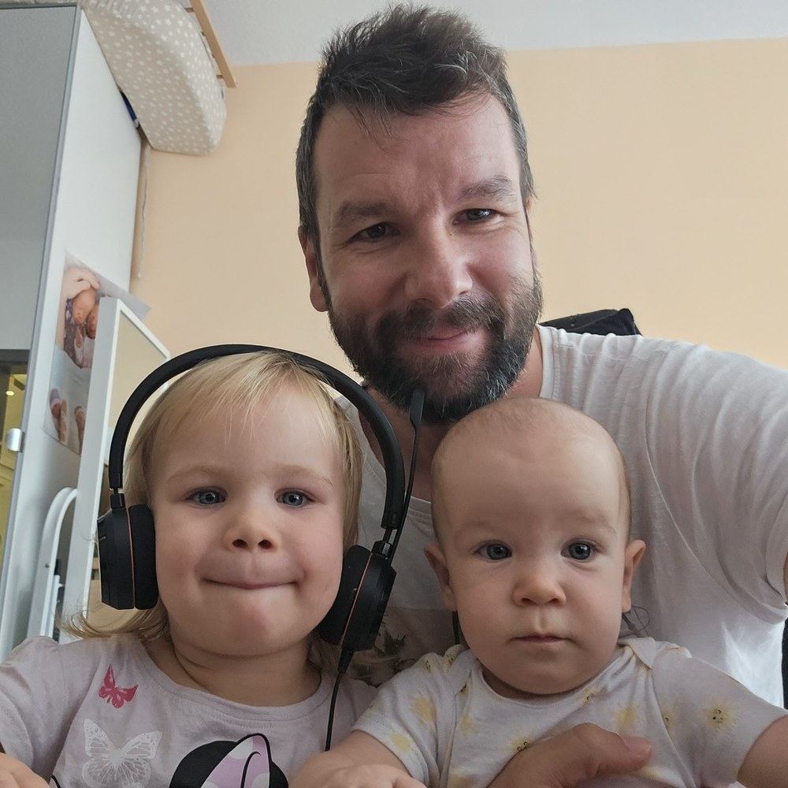
| # | Dátum | Starthely | Típus | Táv | Pont |
|---|---|---|---|---|---|
| 1 | 2026.07.31. | Sárhegy | FAI háromszög | 164.84 km | 329.67 p. |
| 2 | 2026.06.28. | Eged DK | Lapos háromszög | 153.82 km | 276.88 p. |
| 3 | 2026.06.19. | Sárhegy | FAI háromszög | 127.23 km | 254.47 p. |
| 4 | 2026.08.15. | Szársomlyó | Szabadtáv | 142.24 km | 142.24 p. |
| # | Dátum | Starthely | Típus | Táv | Pont |
|---|---|---|---|---|---|
| 1 | 2026.07.25. | Orosháza | FAI háromszög | 156.95 km | 313.90 p. |
| 2 | 2026.06.07. | Csörlő Billeg | Szabadtáv | 241.06 km | 241.06 p. |
| 3 | 2026.09.26. | Orosháza | FAI háromszög | 120.18 km | 240.36 p. |
| 4 | 2026.09.15. | Orosháza | FAI háromszög | 108.42 km | 216.84 p. |
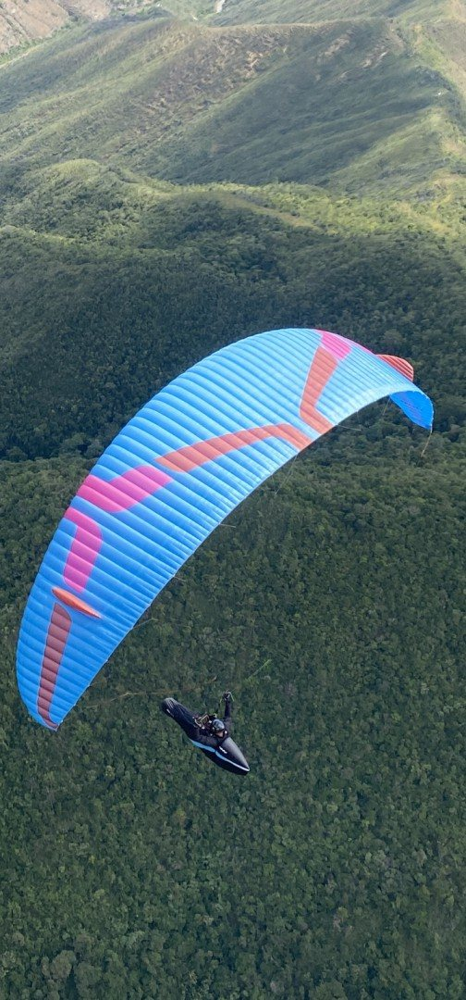
| # | Dátum | Starthely | Típus | Táv | Pont |
|---|---|---|---|---|---|
| 1 | 2026.06.25. | Kalocsa | FAI háromszög | 162.05 km | 324.09 p. |
| 2 | 2026.06.27. | Kiskunhalas | FAI háromszög | 160.75 km | 321.50 p. |
| 3 | 2026.06.20. | Kiskunhalas | FAI háromszög | 143.83 km | 287.67 p. |
| 4 | 2026.08.10. | Kiskunhalas | FAI háromszög | 120.33 km | 240.66 p. |
| 4 | Botond Nyiri [boti]Winchflyer SE | 993.59 | |
| 5 | Richard Dósa [dosa.richard]Eged Eagles SE | 975.36 | |
| 6 | Miklós Bartos [Miko27]Sirius SE | 944.30 | |
| 7 | Gábor Szalai [gszala]KEMRSE | 938.50 | |
| 8 | Zoltán Szalóki [Zale]Eged Eagles SE | 931.73 | |
| 9 | László Mlinkó [mlinko]Eged Eagles SE | 887.43 | |
| 10 | Károly Radványi [Radi]Tokaj Fly SE | 828.81 |
| # | Dátum | Starthely | Típus | Táv | Pont |
|---|---|---|---|---|---|
| 1 | 2026.07.20. | Nyikom | Szabadtáv | 135.19 km | 135.18 p. |
| 2 | 2026.08.09. | Magashegy | Szabadtáv | 107.31 km | 107.30 p. |
| 3 | 2026.06.25. | Magashegy | Szabadtáv | 102.90 km | 102.90 p. |
| 4 | 2026.08.30. | Nyikom | Szabadtáv | 78.49 km | 78.49 p. |
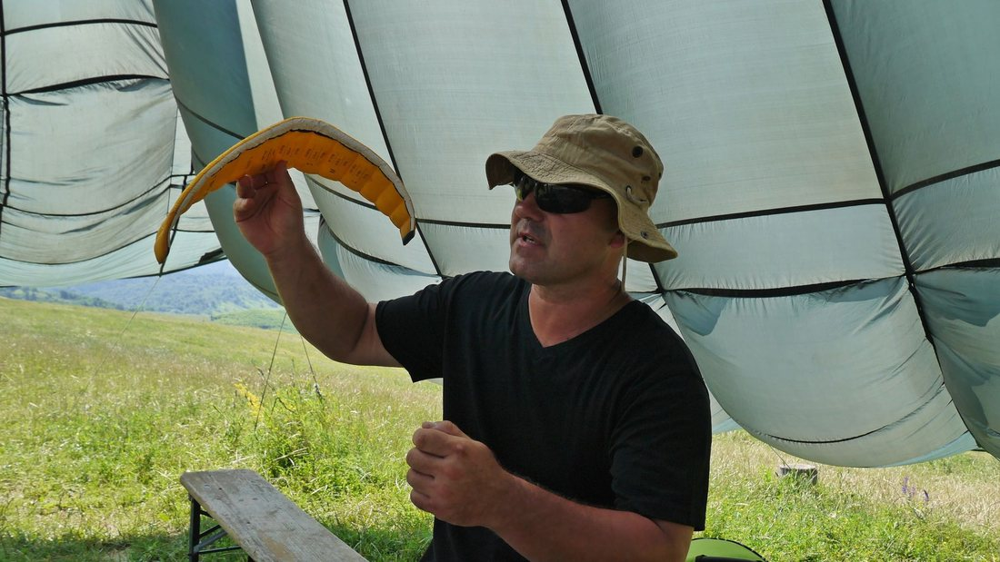
| # | Dátum | Starthely | Típus | Táv | Pont |
|---|---|---|---|---|---|
| 1 | 2026.06.07. | Nyikom | Szabadtáv | 171.93 km | 171.93 p. |
| 2 | 2026.05.24. | Hajdúnánás | Szabadtáv | 121.83 km | 121.83 p. |
| 3 | 2026.05.01. | Tiszavasvári | Szabadtáv | 103.80 km | 103.80 p. |
| 4 | 2026.08.23. | Kunmadaras | Szabadtáv | 79.37 km | 79.37 p. |
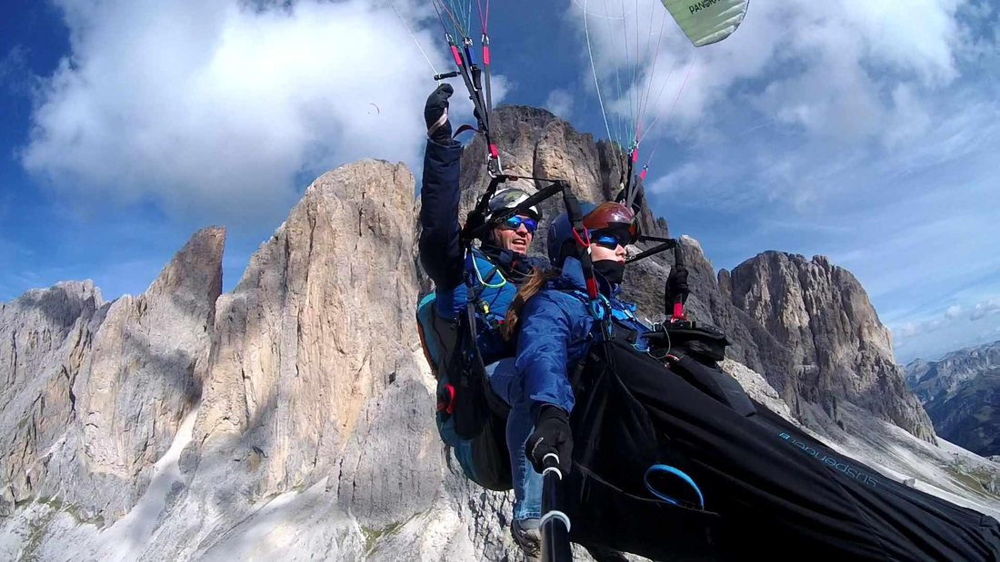
| # | Dátum | Starthely | Típus | Táv | Pont |
|---|---|---|---|---|---|
| 1 | 2026.07.17. | Orosháza | FAI háromszög | 110.58 km | 221.15 p. |
| 2 | 2026.06.29. | Hajdúszoboszló | FAI háromszög | 101.22 km | 202.45 p. |
| 3 | 2026.05.31. | Nyikom | Szabadtáv | 129.79 km | 129.79 p. |
| 4 | 2026.09.27. | Orosháza | Lapos háromszög | 50.91 km | 91.64 p. |
| 4 | Csaba Sándor [scsabi92]KEMRSE | 124.93 | |
| 5 | Miklós Bartos [Miko27]Sirius SE | 54.91 | |
| 6 | Bálint Biró [Beno]Blue Sky SE | 51.07 | |
| 7 | Regina Ludányi [lregina]Amatőr SE | 44.11 | |
| 8 | Szilárd Berkei [beszili]MPC Extrém SE | 30.40 | |
| 9 | Csaba Gombik [recsega]Free Air SE. | 24.43 | |
| 9 | József Pintér [Joci]KEMRSE | 23.80 |
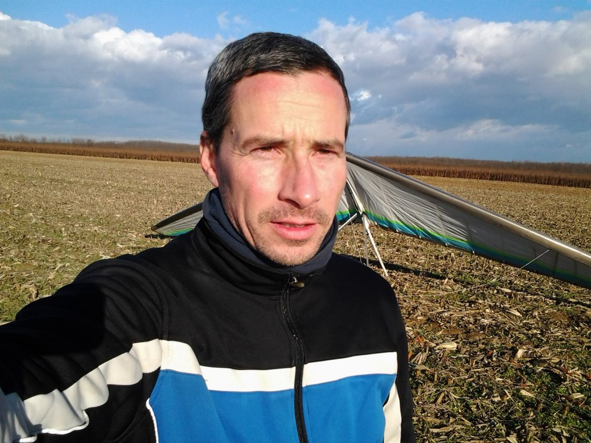
| # | Dátum | Starthely | Típus | Táv | Pont |
|---|---|---|---|---|---|
| 1 | 2026.05.02. | Zalaegerszeg | Szabadtáv | 107.88 km | 107.88 p. |
| 2 | 2026.05.01. | Zalaegerszeg | Szabadtáv | 97.26 km | 97.26 p. |
| 3 | 2026.05.03. | Zalaegerszeg | Szabadtáv | 73.78 km | 73.78 p. |
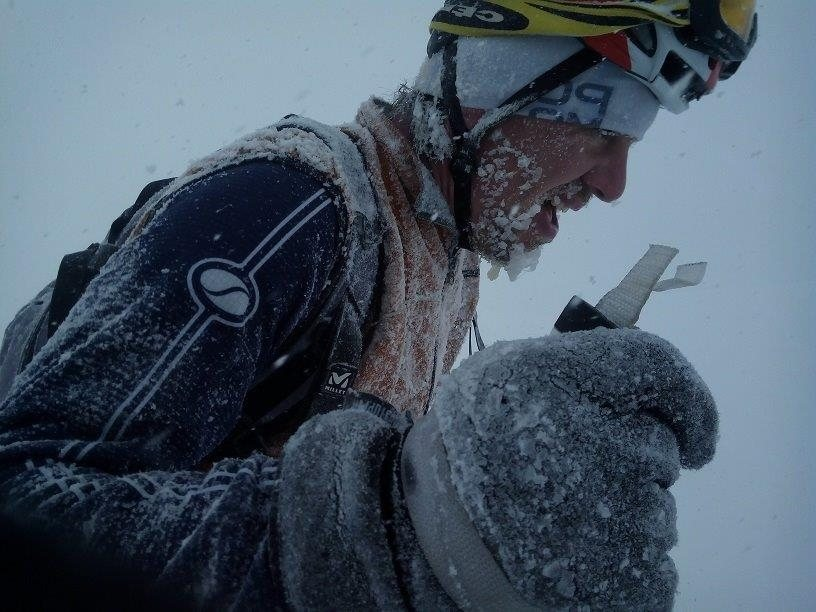
| # | Dátum | Starthely | Típus | Táv | Pont |
|---|---|---|---|---|---|
| 1 | 2026.06.28. | Báránybérc | Lapos háromszög | 233.26 km | 419.88 p. |
| 2 | 2026.05.02. | Zalaegerszeg | Szabadtáv | 151.67 km | 151.67 p. |
| 3 | 2026.05.01. | Zalaegerszeg | Szabadtáv | 96.22 km | 96.22 p. |
| 4 | 2026.05.03. | Zalaegerszeg | Szabadtáv | 76.43 km | 76.43 p. |
| # | Dátum | Starthely | Típus | Táv | Pont |
|---|---|---|---|---|---|
| 1 | 2026.07.25. | Pipishegy | FAI háromszög | 180.18 km | 360.36 p. |
| 2 | 2026.08.30. | Pipishegy | Lapos háromszög | 109.01 km | 196.22 p. |
| 3 | 2026.05.02. | Zalaegerszeg | Szabadtáv | 148.67 km | 148.67 p. |
| 4 | 2026.04.22. | Nyikom | Lapos háromszög | 64.62 km | 116.32 p. |
| 4 | Attila Kis [kisattila]Amatőr SE | 187.05 | |
| 5 | Horváth Zoltán [zoli64]Amatőr SE | 169.99 | |
| 6 | József Nagy [Bigdzso]Zalaegerszegi SRK | 152.97 | |
| 7 | Sándor Czinege [sundi]Amatőr SE | 135.65 | |
| 8 | Dávid Maradics [Maro]Zalaegerszegi SRK | 98.98 | |
| 9 | Áron Nyíri [Pursuit]NagyLufi SE | 32.68 | |
| 10 | Eisenberg Peter [eisike]Amatőr SE | 29.64 |
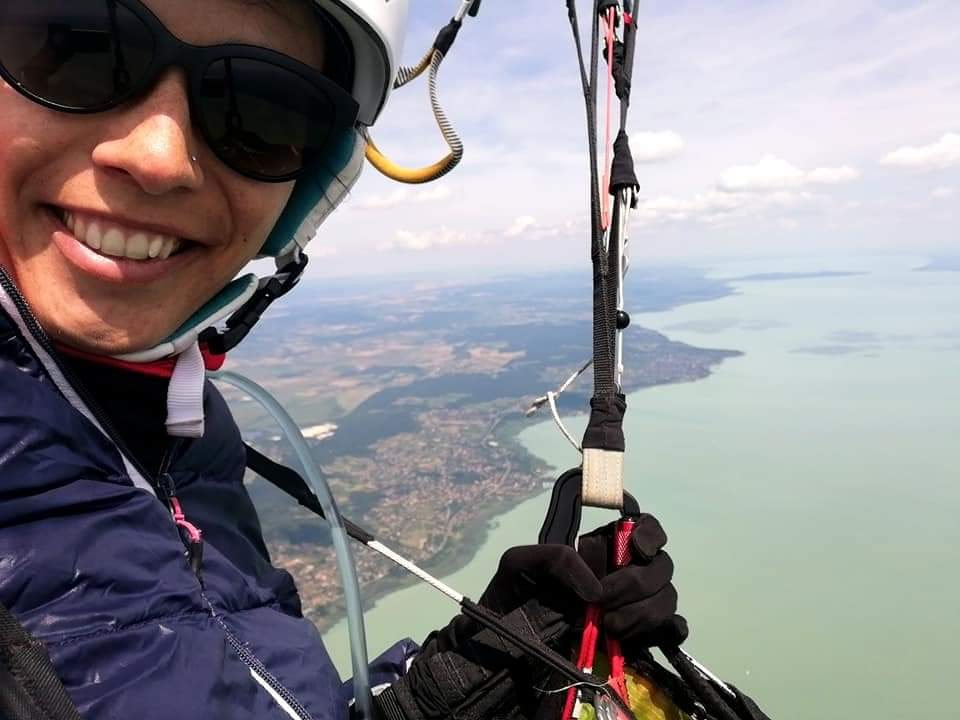
| # | Dátum | Starthely | Típus | Táv | Pont |
|---|---|---|---|---|---|
| 1 | 2026.07.29. | Kalocsa | Lapos háromszög | 95.65 km | 172.16 p. |
| 2 | 2026.05.25. | Eged | Szabadtáv | 53.33 km | 53.33 p. |
| 3 | 2026.08.09. | Hajdúszoboszló | Szabadtáv | 29.78 km | 29.78 p. |
| # | Dátum | Starthely | Típus | Táv | Pont |
|---|---|---|---|---|---|
| 1 | 2026.06.28. | Szársomlyó | Szabadtáv | 132.96 km | 132.96 p. |
| 2 | 2026.06.27. | Szársomlyó | Szabadtáv | 61.41 km | 61.41 p. |
| 3 | 2026.07.31. | Szársomlyó | Szabadtáv | 44.88 km | 44.88 p. |
| 4 | 2026.06.08. | Szársomlyó | Szabadtáv | 43.58 km | 43.58 p. |
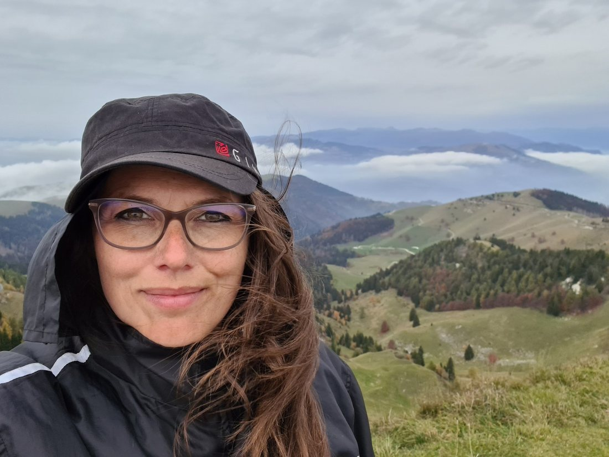
| # | Dátum | Starthely | Típus | Táv | Pont |
|---|---|---|---|---|---|
| 1 | 2026.05.14. | Szeged | Szabadtáv | 102.02 km | 102.02 p. |
| 2 | 2026.05.10. | Szársomlyó | FAI háromszög | 45.34 km | 90.68 p. |
| 3 | 2026.07.31. | Sárhegy | Szabadtáv | 89.59 km | 89.59 p. |
| 4 | 2026.05.09. | Szársomlyó | Lapos háromszög | 40.52 km | 72.93 p. |
| 4 | Flóra Jámbor [JamborFlora]Airborne SE | 185.64 | |
| 5 | Adél Honti [ozibiusz]Felhőút SE | 177.53 | |
| 6 | Timea Szántó [TimiXcontest]Free Air SE. | 145.82 | |
| 7 | Regina Ludányi [lregina]Amatőr SE | 130.48 | |
| 8 | Dóri Fűrész [paracsigo]MPC Extrém SE | 121.94 | |
| 9 | Judit Vas [stopover3]Sirius SE | 107.16 | |
| 10 | Éva (Vica🌷) Vízvári [Vicu09]Felhőút SE | 61.40 |
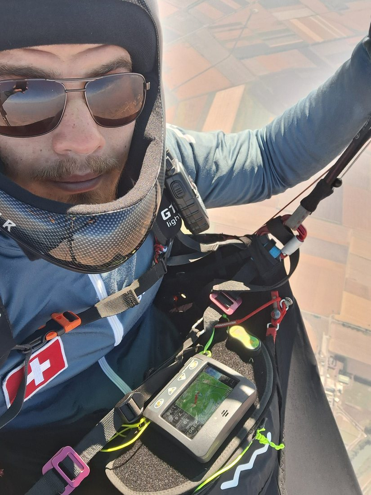
| # | Dátum | Starthely | Típus | Táv | Pont |
|---|---|---|---|---|---|
| 1 | 2026.06.07. | Nyikom | Szabadtáv | 173.92 km | 173.92 p. |
| 2 | 2026.07.17. | Orosháza | FAI háromszög | 71.71 km | 143.43 p. |
| 3 | 2026.05.28. | Tiszavasvári | Szabadtáv | 134.21 km | 134.21 p. |
| 4 | 2026.05.29. | Nyikom | Szabadtáv | 116.64 km | 116.64 p. |
| # | Dátum | Starthely | Típus | Táv | Pont |
|---|---|---|---|---|---|
| 1 | 2026.05.27. | Szokolya | Szabadtáv | 157.81 km | 157.81 p. |
| 2 | 2026.06.07. | Nyikom | Szabadtáv | 125.78 km | 125.78 p. |
| 3 | 2026.09.03. | Vértesszőlős | Szabadtáv | 115.92 km | 115.92 p. |
| 4 | 2026.06.12. | Csobánc | Szabadtáv | 106.63 km | 106.63 p. |
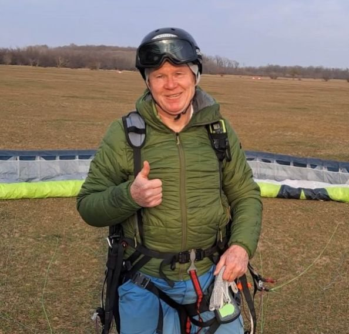
| # | Dátum | Starthely | Típus | Táv | Pont |
|---|---|---|---|---|---|
| 1 | 2026.07.17. | Orosháza | FAI háromszög | 80.93 km | 161.87 p. |
| 2 | 2026.07.25. | Orosháza | FAI háromszög | 78.88 km | 157.76 p. |
| 3 | 2026.09.16. | Orosháza | Szabadtáv | 118.64 km | 118.64 p. |
| 4 | 2026.08.21. | Orosháza | Szabadtáv | 91.45 km | 91.45 p. |
| # | Dátum | Starthely | Típus | Táv | Pont |
|---|---|---|---|---|---|
| 1 | 2026.06.12. | Csörlő Billeg | Szabadtáv | 244.00 km | 244.00 p. |
| 2 | 2026.05.20. | Csörlő Billeg | Szabadtáv | 221.02 km | 221.02 p. |
| 3 | 2026.06.24. | Magashegy | Szabadtáv | 178.00 km | 178.00 p. |
| 4 | 2026.07.04. | Vértesszőlős | Szabadtáv | 166.73 km | 166.73 p. |
| 4 | Sándor Fülöp [Smelakz37]Hajdúszoboszló | 451.56 | |
| 5 | Ferenc Resch [freesch]Sirius SE | 416.05 | |
| 6 | Zoltán Mohola [mzes]Siresz | 144.55 | |
| 7 | Imre Árvai [Imi60]Blue Sky SE | 108.84 | |
| 8 | László Papp [palaci]Amatőr SE | 47.68 | |
| 9 | Laszlo Lauko [llaci]Fly Away SE | 44.70 |
| # | Dátum | Starthely | Típus | Táv | Pont |
|---|---|---|---|---|---|
| 1 | 2026.06.25. | Kalocsa | FAI háromszög | 162.05 km | 324.09 p. |
| 2 | 2026.06.27. | Kiskunhalas | FAI háromszög | 160.75 km | 321.50 p. |
| 3 | 2026.06.20. | Kiskunhalas | FAI háromszög | 143.83 km | 287.67 p. |
| 4 | 2026.08.10. | Kiskunhalas | FAI háromszög | 120.33 km | 240.66 p. |
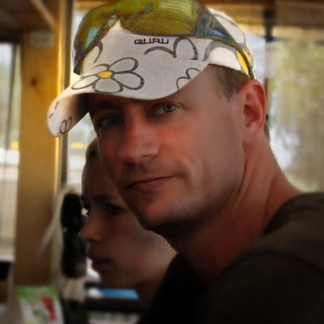
| # | Dátum | Starthely | Típus | Táv | Pont |
|---|---|---|---|---|---|
| 1 | 2026.06.27. | Kalocsa | FAI háromszög | 175.72 km | 351.44 p. |
| 2 | 2026.06.25. | Kalocsa | FAI háromszög | 162.23 km | 324.46 p. |
| 3 | 2026.06.26. | Kalocsa | FAI háromszög | 150.09 km | 300.18 p. |
| 4 | 2026.06.20. | Kalocsa | FAI háromszög | 117.77 km | 235.54 p. |
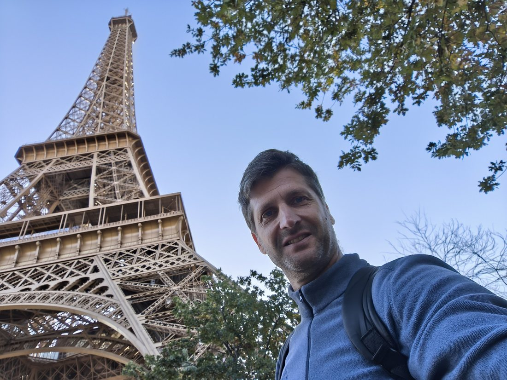
| # | Dátum | Starthely | Típus | Táv | Pont |
|---|---|---|---|---|---|
| 1 | 2026.07.31. | Sárhegy | FAI háromszög | 180.70 km | 361.40 p. |
| 2 | 2026.06.27. | Kiskunhalas | FAI háromszög | 164.69 km | 329.39 p. |
| 3 | 2026.06.20. | Kiskunhalas | FAI háromszög | 143.62 km | 287.24 p. |
| 4 | 2026.08.06. | Kiskunhalas | FAI háromszög | 123.55 km | 247.09 p. |
| 4 | Dávid Kerényi [kerenyid]Fly Away SE | 1012.16 | |
| 5 | Jani Barna [janibar]Sirius SE | 1003.26 | |
| 6 | Botond Nyiri [boti]Winchflyer SE | 993.59 | |
| 7 | Richard Dósa [dosa.richard]Eged Eagles SE | 975.36 | |
| 8 | Pál Takáts [PalTakats]Amatőr SE | 972.81 | |
| 9 | Miklós Bartos [Miko27]Sirius SE | 944.30 | |
| 10 | Gábor Szalai [gszala]KEMRSE | 938.50 |
| # | Dátum | Starthely | Szabadtáv |
|---|---|---|---|
| 1 | 2026.06.07. | Nyikom | 185.90 km |
| 2 | 2026.04.04. | Eged | 181.82 km |
| 3 | 2026.08.15. | Orosháza | 179.72 km |
| 4 | 2026.09.16. | Orosháza | 154.46 km |
| 5 | 2026.05.31. | Nyikom | 129.79 km |
| 6 | 2026.05.14. | Körösladány | 128.08 km |
| 7 | 2026.04.19. | Hajdúszoboszló | 120.46 km |
| 8 | 2026.07.25. | Orosháza | 120.40 km |
| 9 | 2026.05.28. | Nyikom | 117.32 km |
| 10 | 2026.07.17. | Orosháza | 115.36 km |
| 11 | 2026.06.29. | Hajdúszoboszló | 106.71 km |
| 12 | 2026.05.24. | Hajdúszoboszló | 105.37 km |
| 13 | 2026.09.15. | Orosháza | 101.06 km |
| # | Dátum | Starthely | Szabadtáv |
|---|---|---|---|
| 1 | 2026.07.28. | Vértesszőlős | 275.88 km |
| 2 | 2026.07.10. | Vértesszőlős | 247.38 km |
| 3 | 2026.08.01. | Szársomlyó | 212.20 km |
| 4 | 2026.08.12. | Vértesszőlős | 203.04 km |
| Pilóta | Db | Leghosszabb | |
|---|---|---|---|
| 1 | Csaba Földi [Onesto] | 13 | 185.9 km |
| 2 | Dávid Kerényi [kerenyid] | 9 | 241.1 km |
| 2 | Botond Nyiri [boti] | 9 | 232.6 km |
| 2 | László Lugosi [cbleslie] | 9 | 213.3 km |
| 2 | Dániel Reményi [remenyidani] | 9 | 172.7 km |
| 6 | Miklós Bartos [Miko27] | 8 | 263.3 km |
| 6 | Ata B [Wmpilot] | 8 | 182.0 km |
| 6 | Tasi Péter [Tasipepo] | 8 | 167.5 km |
| 9 | Károly Radványi [Radi] | 7 | 245.6 km |
| 9 | Balazs Racz [ENAIRGY] | 7 | 211.7 km |
| Pilóta | Db | Leghosszabb | |
|---|---|---|---|
| 1 | Gábor Szalai [gszala] | 4 | 275.9 km |
| 2 | Miklós Bartos [Miko27] | 3 | 263.3 km |
| 3 | Ábel Varga [VargaAbel] | 2 | 257.3 km |
| 3 | Károly Radványi [Radi] | 2 | 245.6 km |
| 3 | Árpád Detki [karip] | 2 | 244.0 km |
| 3 | Botond Nyiri [boti] | 2 | 232.6 km |
| 3 | Péter Kocsis [Kojak] | 2 | 221.4 km |
| 3 | Zoltán Szalóki [Zale] | 2 | 221.2 km |
| 9 | Dávid Kerényi [kerenyid] | 1 | 241.1 km |
| 9 | Pál Takáts [PalTakats] | 1 | 236.4 km |
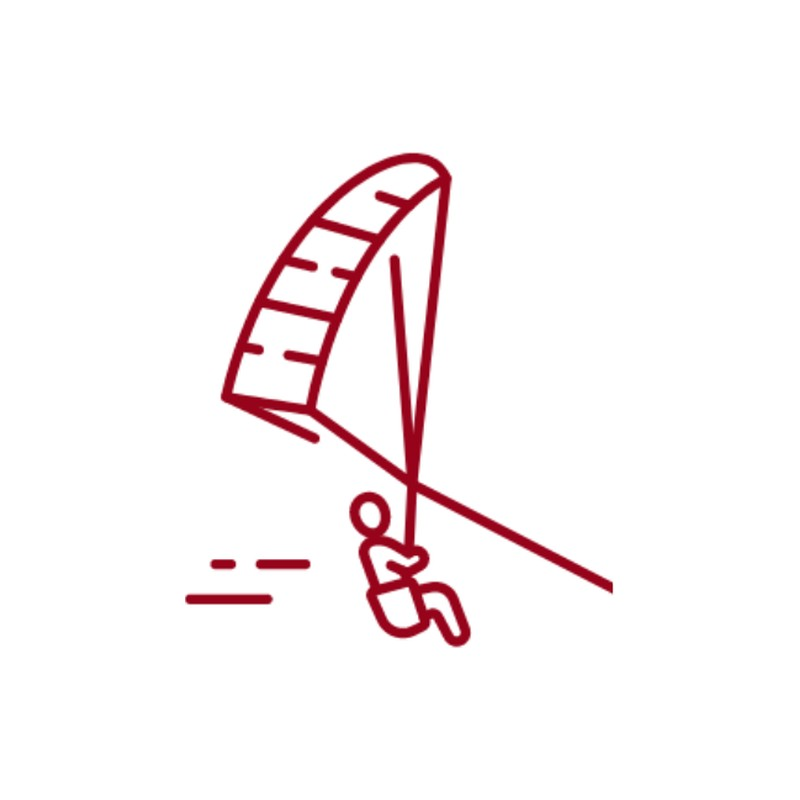
| 1 | Bereznay Attila [Wmpilot] | 1225.12 | |
| 2 | Nyíri Botond [boti] | 993.59 | |
| 3 | Földi Csaba [Onesto] | 847.82 | |
| 4 | Palaga Zoltán [palaga] | 545.11 | |
| 5 | Ács Attila [acsa] | 156.22 |
| 1 | Barna János [janibar] | 1003.26 | |
| 2 | Bartos Miklós [Miko27] | 944.30 | |
| 3 | Szalai Szabolcs [szabbbolcs] | 819.84 | |
| 4 | Páll Csaba [WingsOfFury] | 760.85 | |
| 5 | Kátai István [stevenso] | 460.42 |
| 1 | Dósa Richárd [dosa.richard] | 975.36 | |
| 2 | Szalóki Zoltán [Zale] | 931.73 | |
| 3 | Mlinkó László [mlinko] | 887.43 | |
| 4 | Varga Zoltán [Vargaz] | 803.71 | |
| 5 | Kocsis Péter [Kojak] | 757.98 |
| 1 | Eged Eagles SE | 4356.21 | |
| 2 | Sirius SE | 3988.67 | |
| 3 | Winchflyer SE | 3767.86 | |
| 4 | KEMRSE | 3399.01 | |
| 5 | Amatőr SE | 2905.83 | |
| 6 | Fly Away SE | 2902.59 | |
| 7 | Griff SC | 2835.24 | |
| 8 | Cloudbase | 2791.43 | |
| 9 | Blue Sky SE | 2216.30 | |
| 10 | Napmadár SE | 2152.78 |
| Eged Eagles | |
|---|---|
| Nyíri Botond | 222,8 km |
| Kocsis Péter | 221,4 km |
| Szalóki Zoltán | 221,2 km |
| Szabó Péter | 219,8 km |
| Dósa Richárd | 208,5 km |
| Kötelékrepülők | |
|---|---|
| Banka Róbert | 206,4 km |
| Radványi Károly | 203,3 km |
| Földi Csaba | 185,9 km |
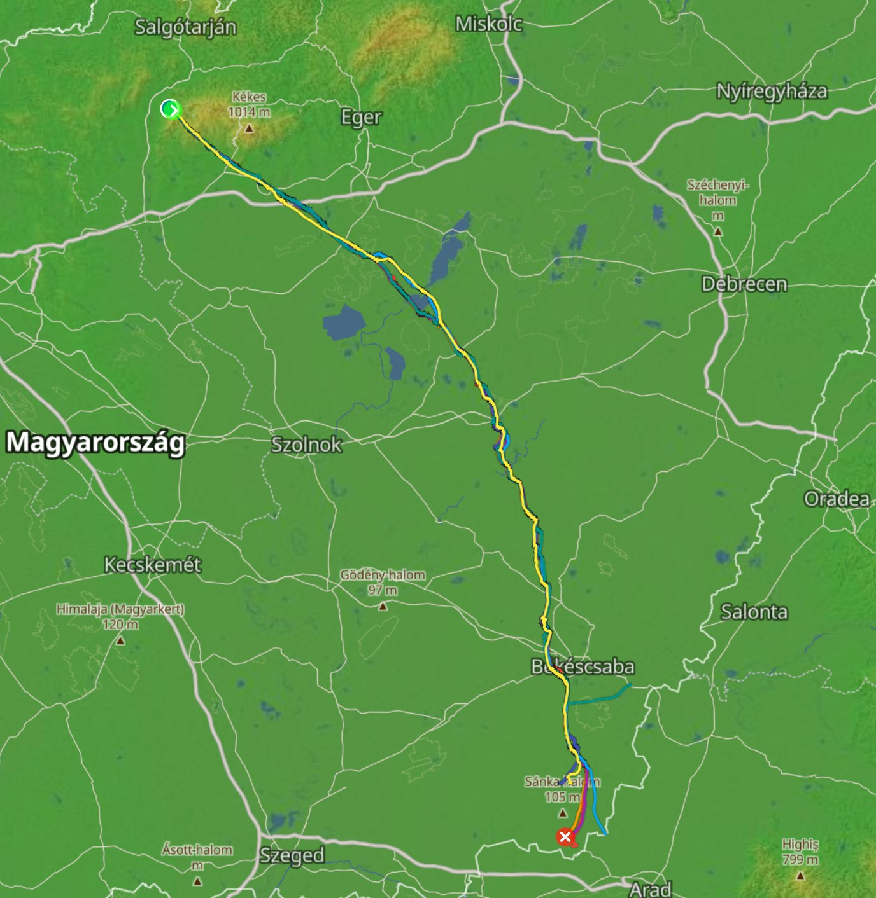
| 1 | Rácz Balázs | +447 m | 4,61 m/s |
| 2 | Sörös Róbert | +685 m | 4,03 m/s |
| 3 | Bartos Miklós | +1099 m | 3,98 m/s |
| 1 | Claudiu Pista | 36,6 km/h |
| 2 | Rácz Balázs | 33,8 km/h |
| 3 | Dósa Richárd | 33,7 km/h |
| 1 | Barna János | 85 km/h |
| 2 | Rácz Balázs | 84 km/h |
| 3 | Adam Barat | 77 km/h |
| 1 | Takács Zsolt | 2510 m |
| 2 | Börcsök Gergő | 2475 m |
| 3 | Sörös Róbert | 2469 m |
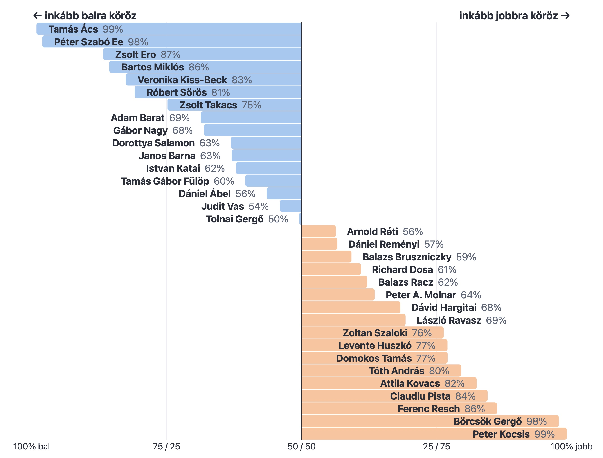
| Feladat | Helyezés | Pont (FTV 50%) |
|---|---|---|
| T1 | 23. | |
| T2 | 18. | 32.7 p. |
| T3 | 24. | |
| T4 | – | 0.0 p. |
| T5 | 16. | 33.7 p. |
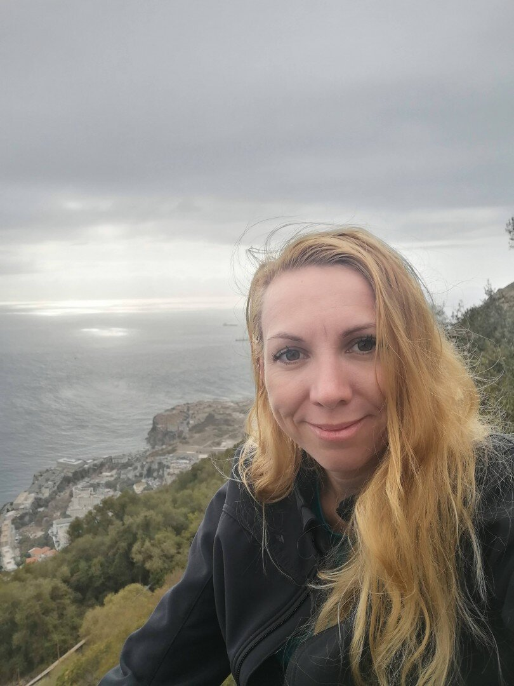
| Feladat | Helyezés | Pont (FTV 50%) |
|---|---|---|
| T1 | – | 0.0 p. |
| T2 | 14. | 203.0 p. |
| T3 | – | 0.0 p. |
| T4 | – | 0.0 p. |
| T5 | 16. | 33.7 p. |
| Feladat | Helyezés | Pont (FTV 50%) |
|---|---|---|
| T1 | 23. | |
| T2 | – | 0.0 p. |
| T3 | 24. | |
| T4 | 11. | 41.7 p. |
| T5 | 11. | 375.5 p. |
| Feladat | Helyezés | Pont (FTV 50%) |
|---|---|---|
| T1 | – | 0.0 p. |
| T2 | – | 0.0 p. |
| T3 | 9. | 545.0 p. |
| T4 | – | 0.0 p. |
| T5 | 16. | 33.7 p. |
| 4 | Fűrész Dóra | 0.00 | |
| 4 | Jámbor Flóra | 0.00 |
| Feladat | Helyezés | Pont (FTV 50%) |
|---|---|---|
| T1 | 14. | 302.7 p. |
| T2 | 15. | |
| T3 | – | 0.0 p. |
| T4 | – | 0.0 p. |
| T5 | 8. | 438.6 p. |
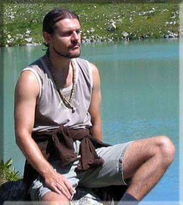
| Feladat | Helyezés | Pont (FTV 50%) |
|---|---|---|
| T1 | 17. | |
| T2 | 6. | 502.8 p. |
| T3 | 20. | |
| T4 | 10. | |
| T5 | 4. | 513.7 p. |
| Feladat | Helyezés | Pont (FTV 50%) |
|---|---|---|
| T1 | – | 0.0 p. |
| T2 | – | 0.0 p. |
| T3 | 8. | 565.7 p. |
| T4 | 7. | |
| T5 | 3. | 520.8 p. |
| 4 | Ács Tamás | 786.80 | |
| 5 | Salamon Dorottya | 578.70 | |
| 6 | Tóth András | 568.40 | |
| 7 | Börcsök Gergő | 520.90 | |
| 8 | Vas Judit | 430.30 | |
| 9 | Resch Ferenc | 320.80 | |
| 10 | Kiss-Beck Veronika | 236.70 |
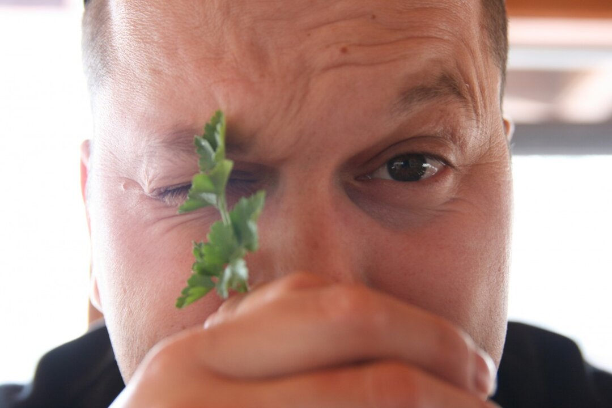
| Feladat | Helyezés | Pont (FTV 50%) |
|---|---|---|
| T1 | 9. | 498.6 p. |
| T2 | – | 0.0 p. |
| T3 | 1. | 972.9 p. |
| T4 | 12. | |
| T5 | 10. |
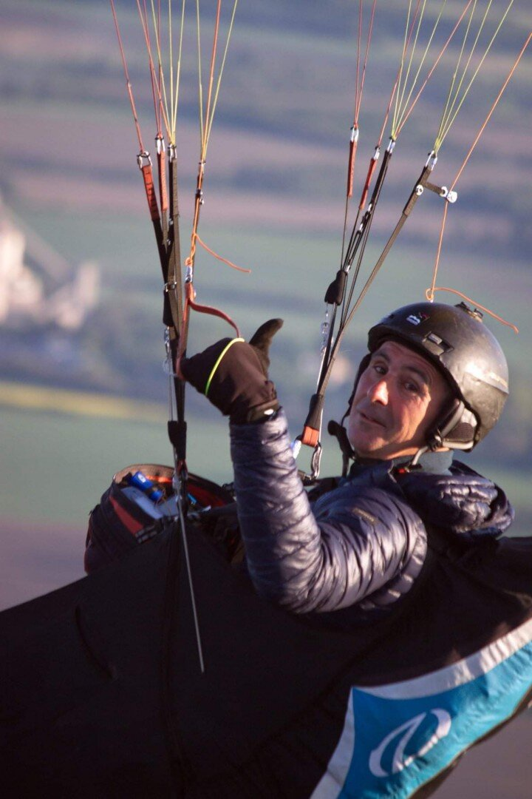
| Feladat | Helyezés | Pont (FTV 50%) |
|---|---|---|
| T1 | – | 0.0 p. |
| T2 | 5. | 744.8 p. |
| T3 | 23. | |
| T4 | 2. | 813.9 p. |
| T5 | 2. |
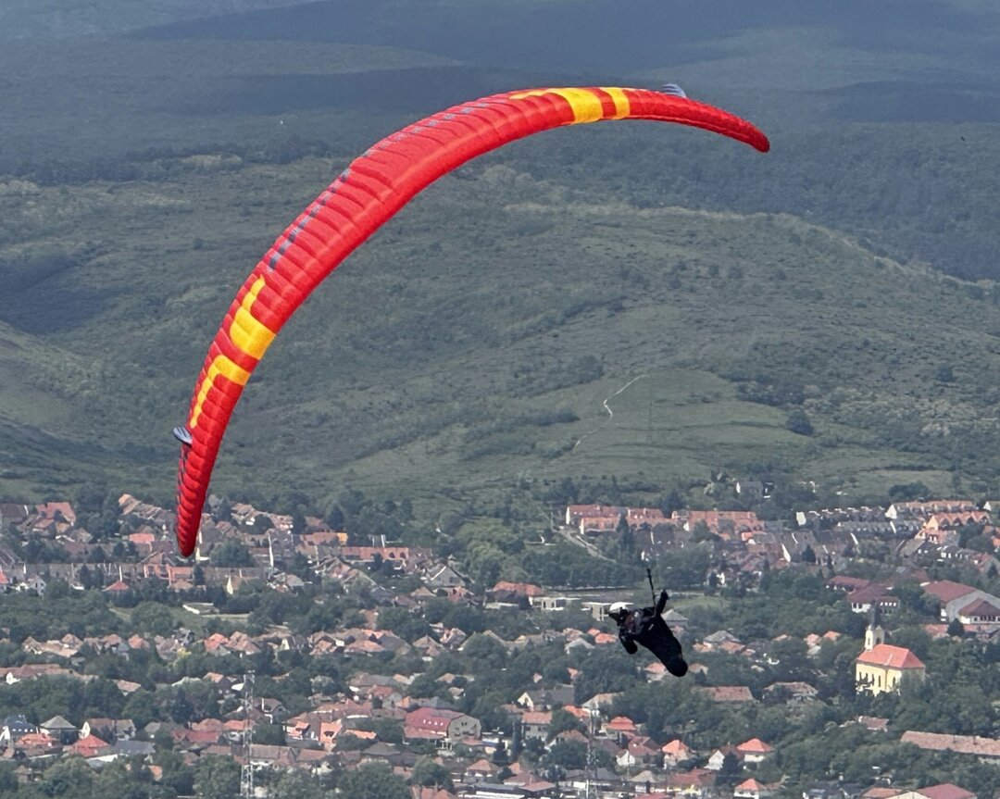
| Feladat | Helyezés | Pont (FTV 50%) |
|---|---|---|
| T1 | 5. | 601.6 p. |
| T2 | 4. | |
| T3 | 3. | 952.4 p. |
| T4 | – | 0.0 p. |
| T5 | – | 0.0 p. |
| 4 | Sörös Róbert | 1557.50 | |
| 5 | Bartos Miklós | 1487.20 | |
| 6 | Reményi Dániel | 1338.20 | |
| 7 | Kocsis Péter | 1200.30 | |
| 8 | Bruszniczky Balázs | 1169.00 | |
| 9 | Réti Arnold | 1133.00 | |
| 10 | Huszkó Levente | 1130.00 |
| Feladat | Helyezés | Pont (FTV 50%) |
|---|---|---|
| T1 | 5. | 601.6 p. |
| T2 | 4. | |
| T3 | 3. | 952.4 p. |
| T4 | – | 0.0 p. |
| T5 | – | 0.0 p. |
| Feladat | Helyezés | Pont (FTV 50%) |
|---|---|---|
| T1 | 3. | 619.5 p. |
| T2 | 3. | |
| T3 | 18. | |
| T4 | – | 0.0 p. |
| T5 | 1. | 864.7 p. |
| Feladat | Helyezés | Pont (FTV 50%) |
|---|---|---|
| T1 | 2. | |
| T2 | 1. | 926.8 p. |
| T3 | 2. | 968.0 p. |
| T4 | – | 0.0 p. |
| T5 | – | 0.0 p. |
| 4 | Takács Zsolt | 1752.20 | |
| 5 | Dósa Richárd | 1718.70 | |
| 6 | Erő Zsolt | 1586.60 | |
| 7 | Sörös Róbert | 1557.50 | |
| 8 | Bartos Miklós | 1487.20 | |
| 9 | Reményi Dániel | 1338.20 | |
| 10 | Kocsis Péter | 1200.30 |